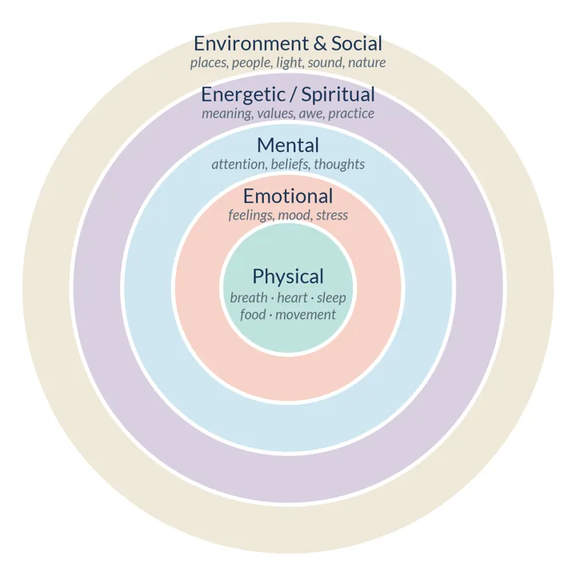
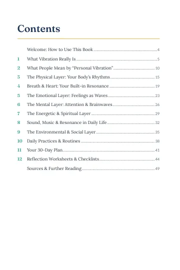
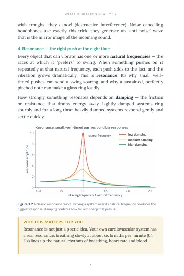
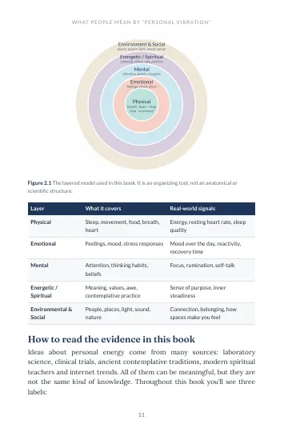
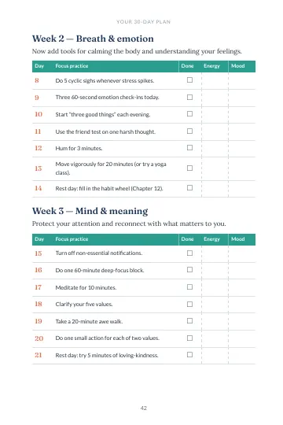
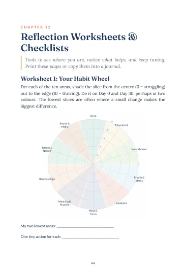
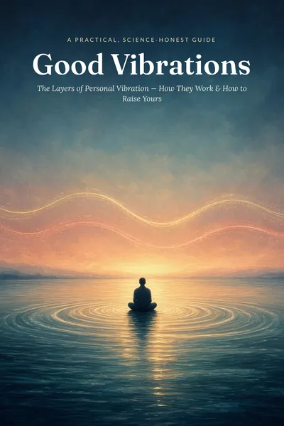

Good Vibrations
The Layers of Personal Vibration: How They Work & How to Raise Yours
From the physics of frequency and resonance to breath, emotion, attention, meaning and connection: a warm, honest guide to what “raising your vibration” really means, and the small daily practices that actually help.
A popular phrase, taken seriously and honestly.
“Raise your vibration” can sound vague, mystical or a little off-putting. Yet behind it is something almost everyone wants: to feel more energetic, calmer, kinder, clearer and more connected.
Good Vibrations starts with what vibration actually is, because the real science of frequency, resonance and synchronization turns out to be surprisingly relevant to your body. Then it walks through five interacting layers of personal vibration, each with how it works, what the research says, and simple practices to try.
Ideas from spiritual traditions and popular culture are welcome here too, offered with respect and clearly labelled where they haven’t been scientifically validated.

- PhysicalSleep, movement, food, breath, heart
- EmotionalFeelings, mood, stress responses
- MentalAttention, thinking habits, beliefs
- Energetic / SpiritualMeaning, values, awe, contemplative practice
- Environmental & SocialPeople, places, light, sound, nature
Twelve chapters, physics to practice
Read cover to cover, jump to the layer that feels most out of tune, or go straight to action: Chapters 10 to 12 hold the routines, the plan and the worksheets.
- 01p. 5
What Vibration Really Is
Frequency, amplitude, resonance and entrainment: the real physics, and exactly where the metaphor begins.
- 02p. 10
What People Mean by “Personal Vibration”
A friendly map of a popular idea, the five-layer model, and three evidence labels to read everything else by.
- 03p. 15
The Physical Layer: Your Body’s Rhythms
Sleep, movement and food: the foundation with the strongest evidence and the fastest feedback.
- 04p. 19
Breath & Heart: Your Built-in Resonance
Heart rate variability, resonance breathing at about six breaths a minute, and the cyclic sigh.
- 05p. 23
The Emotional Layer: Feelings as Waves
Why naming a feeling helps, how emotions spread between people, and how to ride the wave.
- 06p. 26
The Mental Layer: Attention & Brainwaves
What EEG rhythms do and don’t tell us, and why attention is the steering wheel.
- 07p. 29
The Energetic & Spiritual Layer
Meaning, values, awe and practice, with traditions like prana and chakras respected and honestly labelled.
- 08p. 32
Sound, Music & Resonance in Daily Life
Music and mood, binaural beats, the 3-minute hum, and tuning your sound environment.
- 09p. 35
The Environmental & Social Layer
Connection as a health behaviour, a measurable dose of nature, and spaces that support you.
- 10p. 38
Daily Practices & Routines
A sample day, a practice menu for one, five or more minutes, and how to make habits stick.
- 11p. 41
Your 30-Day Plan
Four themed weeks, one small practice a day, and a closing ritual to integrate it all.
- 12p. 44
Reflection Worksheets & Checklists
A habit wheel, a layer check-in, a weekly review, journal prompts and a daily tune-up checklist.
- +p. 49
Sources & Further Reading
The research and guidance behind every chapter, grouped by chapter, with links.
Calm pages, clear diagrams
Original diagrams, evidence labels on every claim, and practice boxes you can follow on the spot.





For curious, gentle skeptics
- You’re drawn to “vibration” language but want to know what’s real.
- You feel flat, scattered or wound up, and want small, doable ways back.
- You love meditation, yoga or sound baths and would like the science behind them.
- You’re a skeptic who still wants more energy, calm and connection.
- You like a plan, a checklist and a page to write on.
Tune each layer, on purpose
- Explain frequency, resonance and entrainment, and spot where the metaphor begins.
- Use resonance breathing and the cyclic sigh to steady your body in minutes.
- Name and ride difficult emotions instead of fighting them.
- Build a daily rhythm from a menu of one- and five-minute practices.
- Follow a 30-day plan and track energy and mood as you go.
- Recognise misleading “vibration” claims before you pay for them.
A few lines to sit with
Short excerpts, quoted exactly as they appear in the book.
“You can find meaning in them without mistaking them for measurements.”
“But you can decide, right now, to breathe more slowly — and when you do, other rhythms follow.”
“The goal is to feel, name, and respond — not to avoid.”
“In other words: friendship isn’t a luxury. It’s a core part of health.”
“Consistency beats intensity.”
“Don’t aim for perfection; aim to show up.”

Name your price
Pay what feels fair to you, from $1. We suggest $9, but every amount is welcome and everyone gets the same book. It helps keep Willowhush going.
Secure checkout is being set up. In the meantime, the whole first chapter is free: download the sample and read at your own pace.
Download free sample- PDF · 52 pages
- 12 chapters
- 30-day plan + worksheets
- First edition 2026
Before you begin
How does “pay what you want” work?
You choose the price, from $1. The suggested amounts ($5, $9, $15) are only a guide; pay whatever feels fair for where you are right now. Everyone gets exactly the same book.
What format is it, and will it work on my device?
It’s a 52-page PDF (6 × 9 inch pages), which reads well on any tablet, computer or e-reader that opens PDFs, and prints cleanly. The worksheets and the 30-day plan are laid out so you can print them and fill them in by hand.
Can I read some of it first?
Yes. The free sample includes pages 1 to 9 of the book (cover, contents, introduction and all of Chapter 1), plus a closing page. It’s a 1.2 MB PDF, no email required.
Is this a spiritual book or a science book?
A bit of both, clearly labelled. Every idea carries one of three labels: well supported, promising / mixed, or tradition / metaphor. Chakras, Solfeggio frequencies and the Map of Consciousness are presented with respect, as frameworks, not as measurements.
Do I need any equipment or experience?
No. The book says it best: “You don’t need any equipment, beliefs or special skills. Just curiosity and a willingness to try small things consistently.”
What if it’s not right for me?
Read the free sample first so you know the voice and approach before paying anything. If something goes wrong with your purchase or download, get in touch through the contact page and we’ll put it right.
Is this medical advice?
No. This book is for general education and is not medical or psychological advice. Please consult a qualified professional about any health concern, and keep taking any treatment you’ve been prescribed.
This book is for general education and is not medical or psychological advice. Consult a qualified professional about any health concern. Illustrations: original diagrams and AI-generated artwork.